name:opening **A Theory and Practice of the Lifelong Learnable Forest**<br> Hayden Helm | Ronak Mehta <br> Carey E. Priebe | Raman Arora | [Joshua T. Vogelstein](https://neurodata.io) (JHU) <br> <!-- {[BME](https://www.bme.jhu.edu/),[ICM](https://icm.jhu.edu/),[CIS](http://cis.jhu.edu/),[KNDI](http://kavlijhu.org/)}@[JHU](https://www.jhu.edu/) --> <a href="https://neurodata.io"><img src="images/neurodata_purple.png" style="height:430px;"/></a> <!-- <img src="images/funding/jhu_bme_blue.png" STYLE="HEIGHT:95px;"/> --> <!-- <img src="images/funding/KNDI.png" STYLE="HEIGHT:95px;"/> --> <!-- <font color="grey"></font> --> .foot[[jovo@jhu.edu](mailto:jovo@jhu.edu) | <http://neurodata.io/talks> | [@neuro_data](https://twitter.com/neuro_data)] --- ### Program goals 1. Formalize A General Theory of (Lifelong) Learning 2. Develop Lifelong Learning Forests (L2F) algorithm 3. Demonstrate L2F achieves SOA lifelong learning 3. Prove L2F theoretically "solves" lifelong learning 4. Discuss Future plans --- class: middle, inverse ## .center[A General Theory of Learning] --- ## What is Learning? <img src="images/Vapnik71.png" style="width:500px;"/> -- <img src="images/Valiant84.png" style="width:500px;"/> --- ## What is Learning? <img src="images/Mitchell97.png" style="width:600px;"/> --- ## What is Learning? Tom Mitchell 1997 (not exact quote): "Given data $D_n$ from distribution $P$ in .r[setting $S$], an .r[algorithm $f$] **learns** when $f$'s .r[performance $\mathcal{E}$] improves with increasing sample size $n$." <br> -- A machine learning **task** is: Given $n$ samples from $P$ in $S$, design $f$ to optimize $\mathcal{E}$ . --- ### What is a Setting? A setting is a sextuple $S = \lbrace \mathcal{Z}, \mathcal{A}, \mathcal{P}, \mathcal{H}, \ell, {R} \rbrace$ | Definition | Notation | Example |:--- |:--- |:--- | | Measurements | $ \mathcal{Z}$ | $z_i = (x_i,y_i): i \in [n]$ | | Model | $\mathcal{P} := \lbrace P_\theta : \theta \in \Theta \rbrace$ | Gaussian | Action space | $\mathcal{A}$ | turn left | Hypotheses | $\mathcal{H} = \lbrace h: \mathcal{Z} \to \mathcal{A} \rbrace$ | $a = \mathbb{I}(z>0)$ | Loss Function | $\ell: \mathcal{H} \times \mathcal{A} \to \mathbb{R}_+$ | $ (a - y)^2$ | Risk Functional | $R: \mathcal{P} \times \mathcal{L} \times \mathcal{H} \to \mathbb{R}_+$ | $\mathbb{E}_P[\ell( h(z), a)]$ --- ### What is an Algorithm? $f$ is a sequence of learning procedures, $f_1, f_2, \ldots$, where each $f_n \in \mathcal{F}$ maps from an element of data space to an action, $f\_n : \mathcal{Z}^n \to \mathcal{H}$. ### What is Performance? Generalization error $\mathcal{E}$ is the expected risk with respect to training dataset: $$ \mathcal{E}\_S(f\_n,P) = \mathbb{E}_{P}[R(f_n(D_n))].$$ --- ## What is Learning? "Given data $D_n$ from distribution $P$ in .r[setting $S$], an .r[algorithm $f$] **learns** when $f$'s .r[performance $\mathcal{E}$] improves with increasing sample size $n$." <br> $f$ learns iff $\mathcal{E}\_S(f\_n,P)$ is non-constant monotonically decreasing: $$ \forall n: \; \mathcal{E}\_S(f\_n,P) \geq \mathcal{E}\_S(f\_{n+1},P) \text{ (never goes up)}$$ $$\exists \; n: \mathcal{E}\_S(f\_n,P) > \mathcal{E}\_S(f\_{n+1},P) \text{ (sometimes goes down)}$$ --- ### What is Learning Efficiency? The relative efficiency of $f\_n$ relative to $f'\_n$ is $$RE\_{n}^{P}(f,f') := \frac{\mathcal{E}\_S(f\_n,P)}{\mathcal{E}\_S(f'\_n,P)}.$$ <br> In general, we want $RE \leq 1 - \delta$, for some $\delta>0$ and $n,n' > n_0$. -- <br> The goal of machine learning is to design new $f$'s that are increasingly more efficient. --- ### What is Transfer Learning? Given $n> n\_0$ samples from $P$ in setting $S$ .r[and $n'> n\_0$ samples from $Q$], an algorithm $f$ **transfer learns** when $f$'s performance $\mathcal{E}$ improves with increasing sample size $n$ .r[more when also including the $n'$ samples from $Q$]. -- Let $TLE\_{n,n'}^{P,Q}(f):=\frac{\mathcal{E}\_S(f\_{n+n'},P)}{\mathcal{E}\_S(f\_{n},P)}.$ Formally, $f$ transfer learns iff $\exists \; \delta, n\_0 > 0$ such that $\forall n\_j > n\_0$: $TLE\_{n,n'}^{P,Q}(f) < 1 - \delta.$ --- ### What is Universal Transfer Learning? We say that $f$ **universally** transfers in setting $S$ iff $\exists \; \delta, n\_0 > 0$ such that $\forall n\_j > n\_0$: <!-- $\forall n,n' > n\_0$, $\exists \; \delta > 0$ such that: --> $\exists P,Q \in \mathcal{P}: TLE\_{n,n'}^{P,Q}(f) < 1 - \delta$ (sometimes better), and $\forall P,Q \in \mathcal{P}: TLE\_{n,n'}^{P,Q}(f) \leq 1 + \delta$ (never much worse). --- ### What is Multi-Task (MT) Learning? Given $n$ samples from .r[$J$ different distributions $P\_j$ in settings $S\_j$], an algorithm $f$ **multi-task learns** when $f$'s performance $\mathcal{E}\_j$ $\forall j$ improves with increasing sample size $n\_j$ more .r[on average] when also including .r[all the other $n-n\_j$ samples]. -- Let $MTE^{\vec{P}}\_{\vec{n}}(f) := \frac{1}{J}\sum\_{j=1}^J \frac{\mathcal{E}\_j(f\_{\sum\_j n\_j},P\_j)}{\mathcal{E}\_j(f\_{n_j},P\_j)}.$ <br> Formally, $f$ MT learns iff $\exists \; \delta, n\_0 > 0$ such that $\forall n\_j > n\_0$: <!-- \; \& \; \forall j \in [J]$: --> <!-- $ \forall j \in [J]$ $\exists \; n\_j >n\_0 \; \& \; \delta > 0$ such that --> $$MTE^{\vec{P}}\_{\vec{n}}(f) < 1 - \delta. $$ <br> --- ### What is Universal MT Learning? We say that $f$ **universally** multi-task learns in settings $\vec{S}$ iff $\exists \; \delta, n\_0 > 0$ such that $\forall n\_j > n\_0$: $\exists \vec{P} \in \vec{\mathcal{P}}: MTE\_{\vec{n}}^{\vec{P}}(f) < 1 - \delta$ (sometimes better), and $\forall \vec{P} \in \vec{\mathcal{P}}: MTE\_{\vec{n}}^{\vec{P}}(f) \leq 1 + \delta$ (never much worse). --- ### What is Lifelong Learning? Given $n$ .r[sequential] samples from .$J$ different distributions $P\_j$ in settings $S\_j$, an algorithm $f$ **lifelong learns** when $f$'s performance $\mathcal{E}\_j$ $\forall j$ improves with increasing sample size $n\_j$ more on average when also including .r[both future and past data], and performance .r[never gets much worse]. Let $ LLE^{P\_j,\vec{P}}\_{n\_j,\vec{n}}(f) := \frac{\mathcal{E}\_j(f\_{\sum\_j n\_j},P\_j)}{\mathcal{E}\_j(f\_{n_j},P\_j)}.$ Formally, $f$ lifelong learns iff $\exists \; \delta, n\_0 > 0$ such that $\forall n\_j > n\_0$: $\frac{1}{J}\sum\_{j=1}^J LLE^{P\_j,\vec{P}}\_{n\_j,\vec{n}}(f) < 1 - \delta$ (average better), and $\nexists j \in [J]: LLE^{P\_j,\vec{P}}\_{n\_j,\vec{n}}(f) \geq 1 + \delta$ (never much worse). --- ### What is Universal Lifelong Learning? We say that $f$ **universally** lifelong learns in settings $\vec{S}$ iff $\forall n\_j > n\_0$ and $\forall \vec{P} \in \vec{\mathcal{P}}$, lifelong learning holds. --- ### Three Kinds of Lifelong Learning 1. Supervised: setting is provided for each data sample 2. Unsupervised: setting is not provided for any data sample 3. Semi-supervised: setting is sometimes provided for some data samples -- We largely focus on supervised setting hereafter. --- class: middle, inverse ## .center[General (Lifelong) Learning Machines] --- ### Machine Learning: Basic Set-Up Given 1. A task $ T $ 2. Observed data $ z\_1, z\_2, .., z\_n $ Assume 1. The $ z\_t $ are independent <!-- 1. At each time step $t$, we observe - a sample $z_t \in \mathcal{Z}$, - a task identifier $j \in \mathcal{J}$ (which is fixed for all $t$). 3. The number of samples $n$ increases. 3. All samples are independent of each other. Assumption 3 can be relaxed. --> --- ### Constituents of Learning Machines 1. .r[representation space]: data are transformed into this space 2. .r[transformer]: maps each point to the representation space 3. .r[decider]: takes an action using the transformed data --- ### Example 1 Linear 2-class classification (we want to label black dot) <img src="images/l2m_18mo/cml_all_data.png" style="width:475px" class="center"/> --- ### Example 1 - Linear Discriminant Analysis 1. Representation space: the real number line 2. Transformer: projection matrix that maps each feature vector onto real number line 3. Decider: threshold such that values above threshold are one class, and below are the other <img src="images/l2m_18mo/cml_linear.jpg" style="width:475px" class="center"/> <!-- diagram of linear classifier (projection from R^d to R then threshold) for two class, spherical gaussians --> <!-- figure of problem --> <!-- figure with representation --> <!-- figure showing transformation of one data point to the line --> <!-- figure showing decider acting on a the transformed data point --> --- ### Example 1 - Decision Tree 1. Representation space: a partition of $ \mathbb{R}^{d} $ 2. Transformer: maps a data point to a cell of the partition 3. Deciders: plurality (or average) of elements per cell 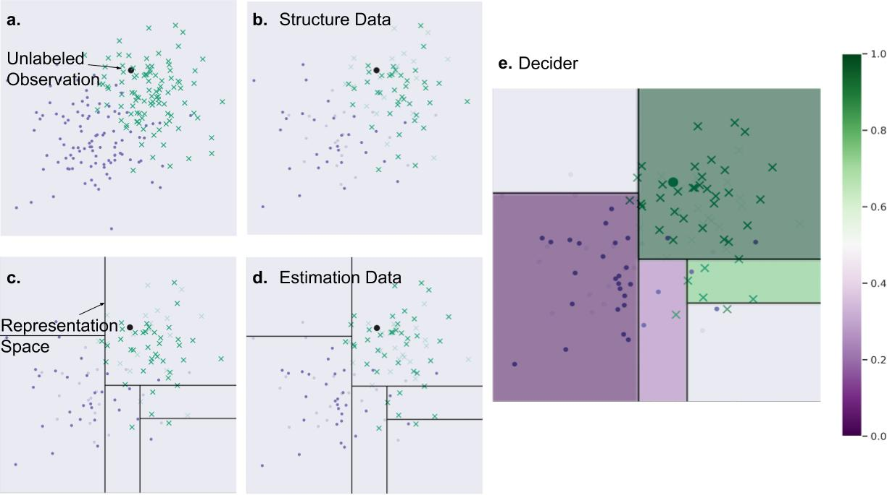 <!-- diagram of a partition for two class, spherical gaussians --> <!-- figure of representation (partition) --> <!-- figure of a data point in a cell of the partition --> <!-- figure of classifying a data point in a cell of the partition --> --- ### Example 1 - Decision Forests 1. Representation space: a set of partitions of $ \mathbb{R}^{d} $ 2. Transformer: maps a data point to a cell of each of the partitions 3. Deciders: average of decision trees (posterior probabilities) --- ### Decision Tree 1 Subsample the data and learn a partition of the input space. The input space is $\mathbb{R}\^2$ and the classes are green or purple. Each cell of the partition has an associated probability of class green. A new data point is first placed into a cell, and then its class is predicted based on the cell's probability. 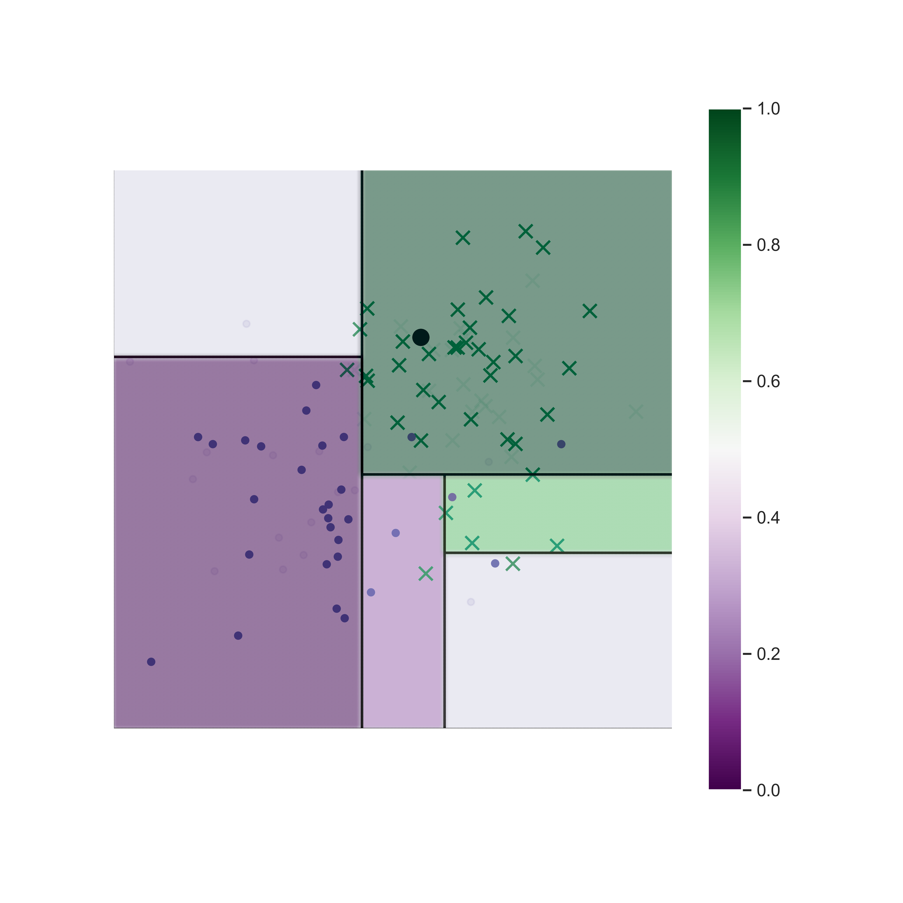 --- ## Decision Tree 2 Similarly, another random subsample will yield a different decision tree, with different cells and cell probabilities. 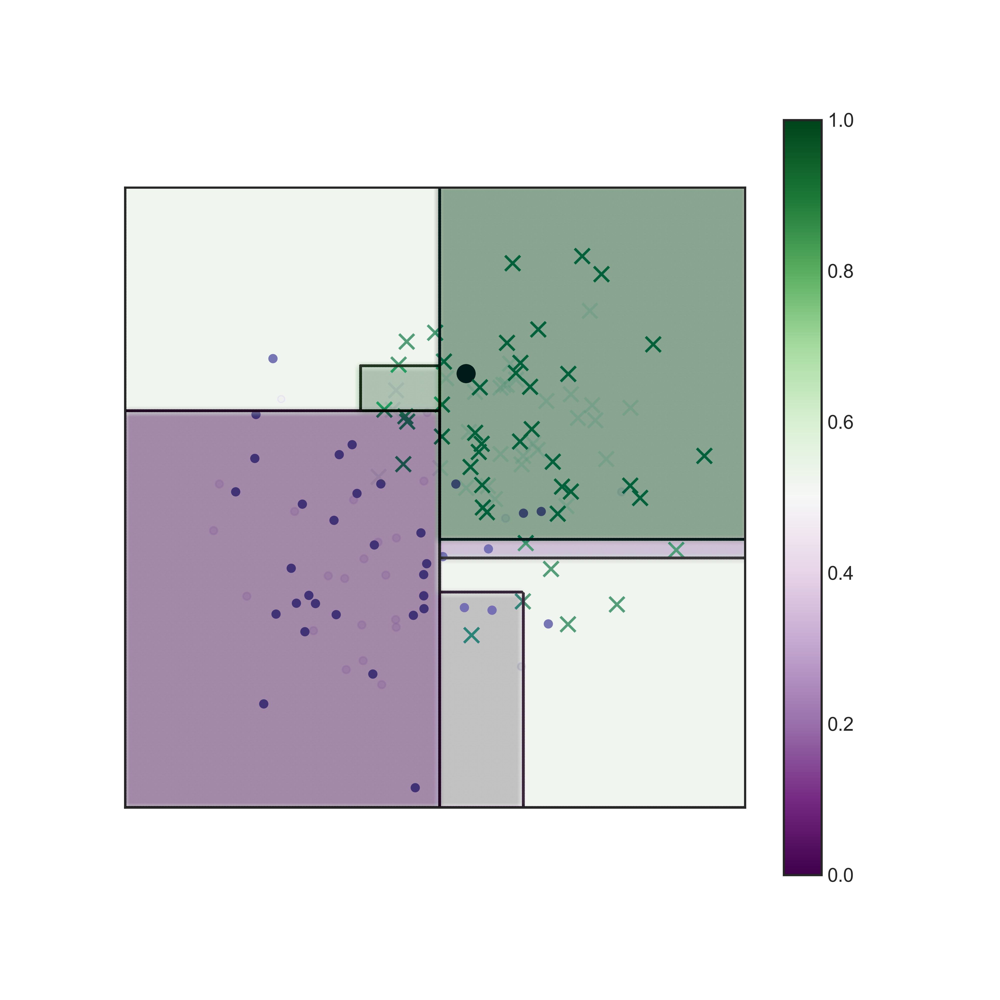 --- ### Decision Forests / Random Forests Each partition learned from the various subsamples is a **representation**, and the decision tree **transforms** data into those representations. The **decider** chooses the class based on the cell probability. <img src="images/l2m_18mo/cml_forest.jpg" style="width:600px" class="center"/> <!-- diagram for two class, spherical gaussians --> <!-- figure of representtaion (multiple partitions) --> <!-- figure of data point in a cell of each of the partitions --> <!-- figure of classifying a data point --> <!-- --- ### Decision Forests - Transformer: partition space using a subset of the $ n $ data samples - Decider: majority vote on remaining samples <img src="images/l2m_rf_cartoon.jpg" style="width:475px" class="center"/> --> <!-- diagram 1: all data diagram 2: transformer data diagram 3: partitions learned on transformer data diagram 4: posteriors estimated using transformer data (continue to show data) diagram 5: posteriors estimated using decider data (continue to show data) diagram 6: show true posterior diagram 7: consider showing posterior errors - explan n, d --> --- ### Key Insight of Uncertainty Forests - Sub-sample data into two sets, one to learn transformers, and one to learn deciders - Doing so yields consistent estimates of the probabilities averaged per cell, that is, $$\hat{P}(f\_n) \rightarrow P$$ --- #### Key Algorithm Parameters Per Tree - To learn partitions: - bootstrap = true (sklearn default) - min_samples_leaf=1 (sklearn default; maximally pure trees) - max_features = $\sqrt{p}$ (sklearn default; not relevant for 2D data) - max_depth=30 (to accelerate run time; makes accuracy worse typically) - max_samples = 0.32 (to enable samples for learning posteriors) - To learn posteriors: - finite sample correction = 1 / ( 2 $\times$ # samples in cell) - Nothing special about our tree construction, basically: - default sklearn parameters, plus - modifications to enable learning posteriors (deciders) <!-- new slide: add error + posterior plots for linear example --> --- ### Example 2 XOR (we want to label black dotgit ) - Samples in the (+, +) and (-, -) quadrants are class 1 - samples in the (-, +) and (+, -) quadrants are class 0. - The optimal decision boundary is the coordinate axes. 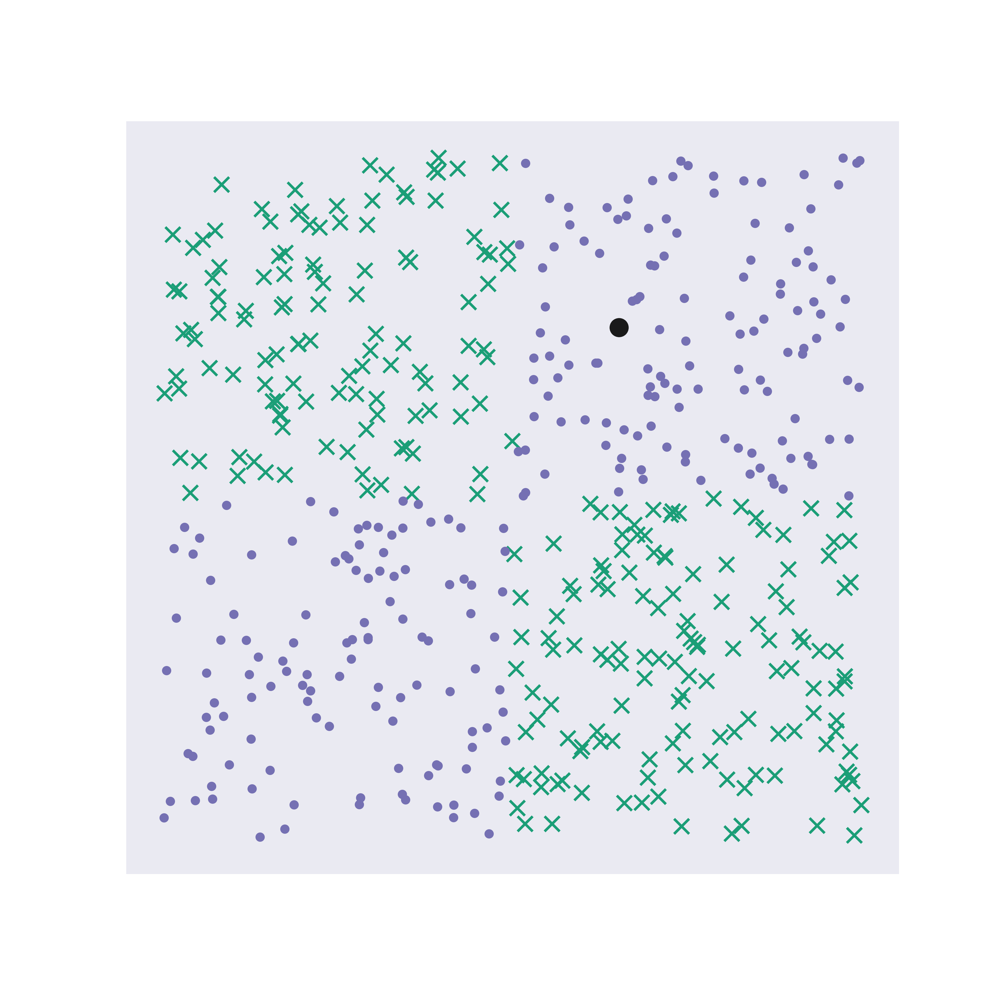 <!-- <div style="display:inline-flex"> <div> --> <!-- </div> <div> <img src="images/NXOR.png" style="width:275px" class="center"/> </div> </div> --> <!-- <img src="images/NXOR.png" style="width:275px" class="center"/> <img src="images/NXOR.png" style="width:275px" class="center"/> --> <!-- - .r[XOR] - Samples in the (+, +) and (-, -) quadrants are class 1 - samples in the (-, +) and (+, -) quadrants are class 0. - The optimal decision boundary is the coordinate axes. - .purple[N-XOR] - Samples in the (+, +) and (-, -) quadrants are class 0 - samples in the (-, +) and (+, -) quadrants are class 1. - The optimal decision boundary is the coordinate axes. - .purple[N-XOR] is just .r[XOR] with the class labels flipped --> <!-- change from n-xor to xor --> --- ### Decision Forests <div style="display:inline-flex"> <div> 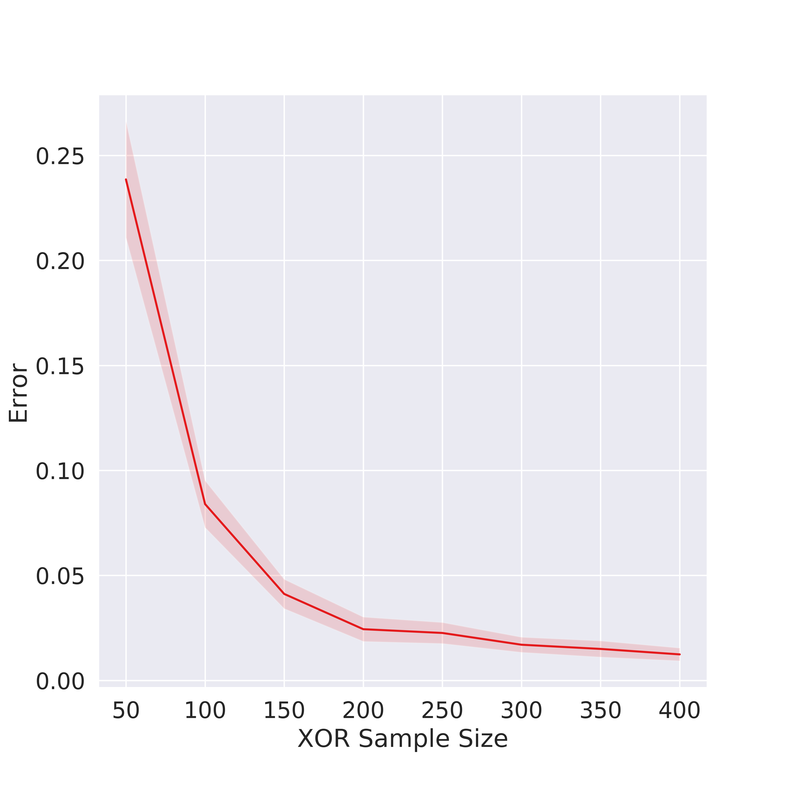 </div> <div> 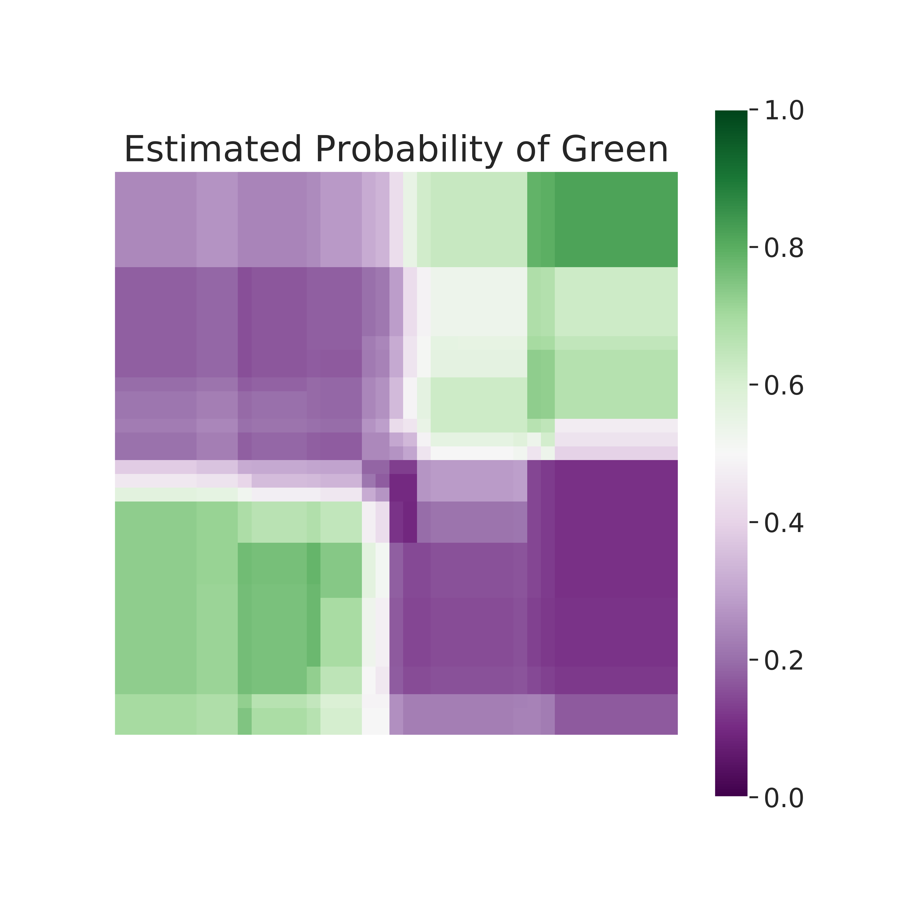 </div> </div> Left: - Error is estimated generalization error, $\hat{\mathbb{E}}_{P}[R(f_n(D_n))]$ - transformer (partition) learned using one subset of data from .r[XOR] - decider (posteriors) learned using other data from .r[XOR] - Error monotonically decreases with increasing sample size <!-- change from n-xor to xor --> --- ### Decision Forests <div style="display:inline-flex"> <div> <img src="images/l2m_18mo/L2M_18mo_xor_nxor_rf.png" alt="Snow" style="height:300px; width:300px"> </div> <div> </div> </div> Right: - learned probability of an observation being green - using 100 .r[XOR] training samples <!-- change from n-xor to xor --> <!-- change colormap to purple / green diverging --> --- ### Transfer Learning: Basic Set-Up Given 1. a task $ T $ 2. observed source data $ z'\_1, z'\_2, .., z'\_s $ 3. observed target data $ z\_1, z\_2, .., z\_n $ Assume 1. the $ z\_t $, $ z'\_t $ are all mutually independent <!-- Make the following assumptions: 1. We are given $m$ training samples from a .r[source] task 2. At each time step $t$, we observe - a target sample $z_t \in \mathcal{Z}$, and - a task identifier $j_t \in \mathcal{J}$ (which includes $\emptyset$). 3. The number of target samples $n$ increases. 4. All samples are independent of each other. Assumption 4 can be relaxed. --> --- ### Constituents of Transfer Machines 1. .r[universal representation space]: source and target data are transformed into this space 2. .r[transformers]: map each source and target point to the representation space 3. .r[decider]: takes an action using all the transformed data --- ### Example 3 Two linear 2-class classification tasks 1. Universal Representation Space: the real number line 2. Transformer: projection matrix that maps data onto real number line 3. Decider: threshold such that target values above threshold are one class, and below are the other <!-- task 1: - mean1 = (1,1) orange - mean0 = (0,0) purple task 2: - mean1 = (0,0) green - and mean0 = (1,1) magenta --> --- ### Source Data Data that is not necessarily for the task of interest, but still can be learned from. <img src="images/l2m_18mo/tlsource_linear_problem.png" style="width:475px" class="center"/> --- ### Source Representation The representation is the line that LDA will project all of the data onto in order to classify them. 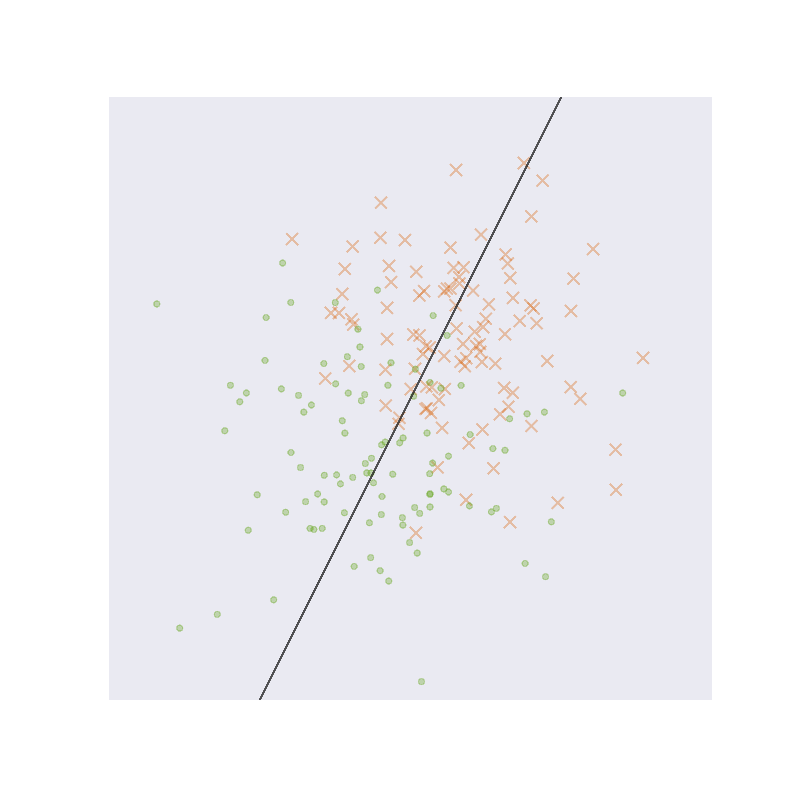 --- ### Source Transformer The source "transformer" executes the projection onto this line. 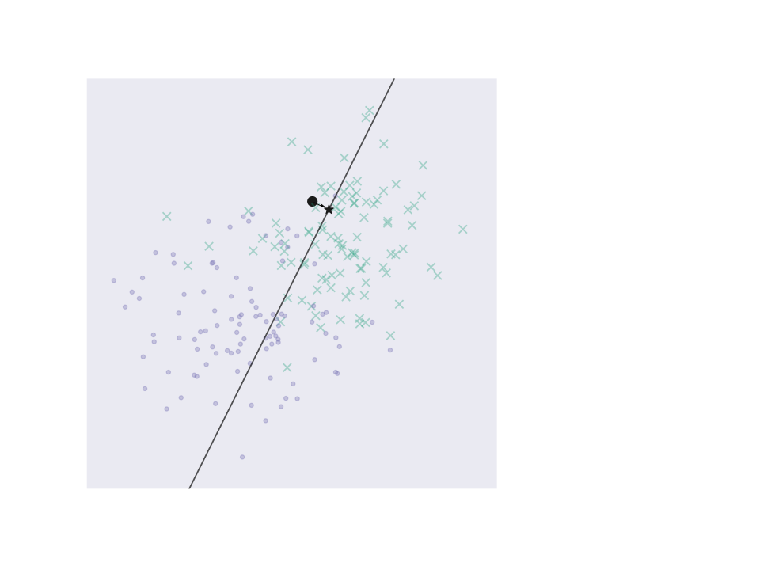 --- ### Source Decider Finally, decisions are made based on which half of the line the projected data falls into. 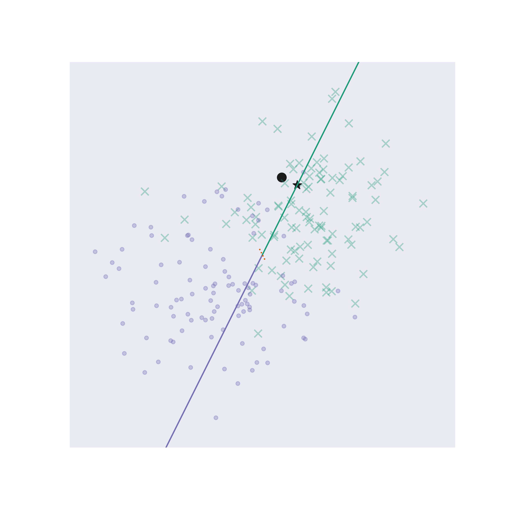 --- ### Source Decision The test point is colored by its predicted class. 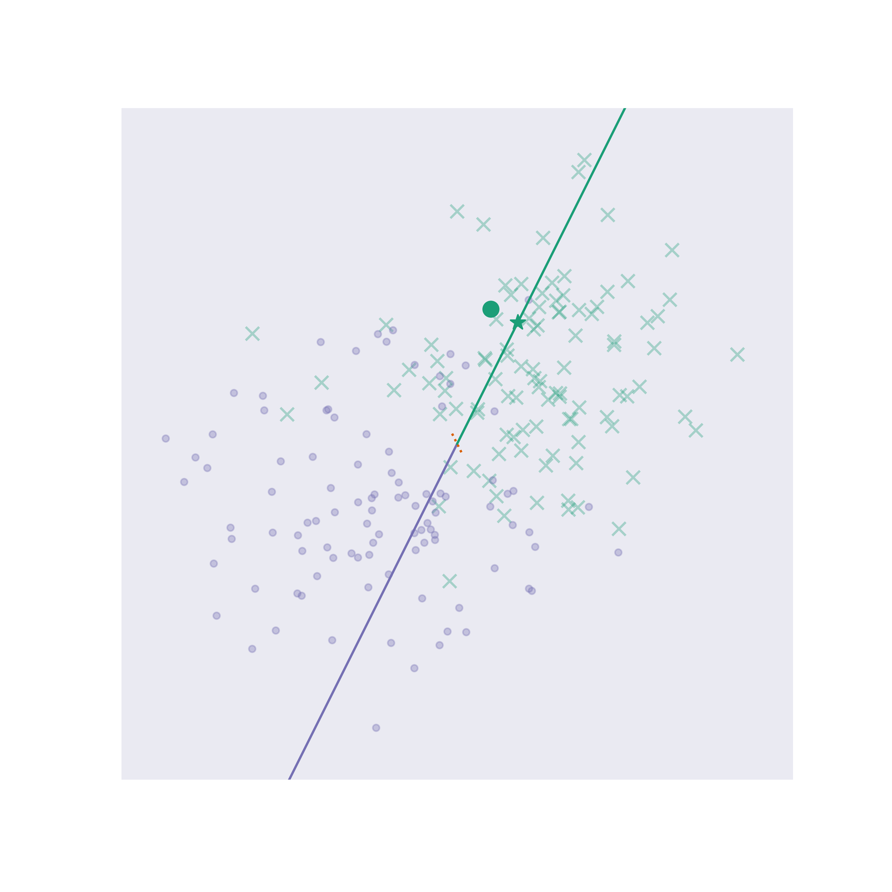 --- ### Source and Target Representations The representations learned by LDA from both the target data and source data are shown. 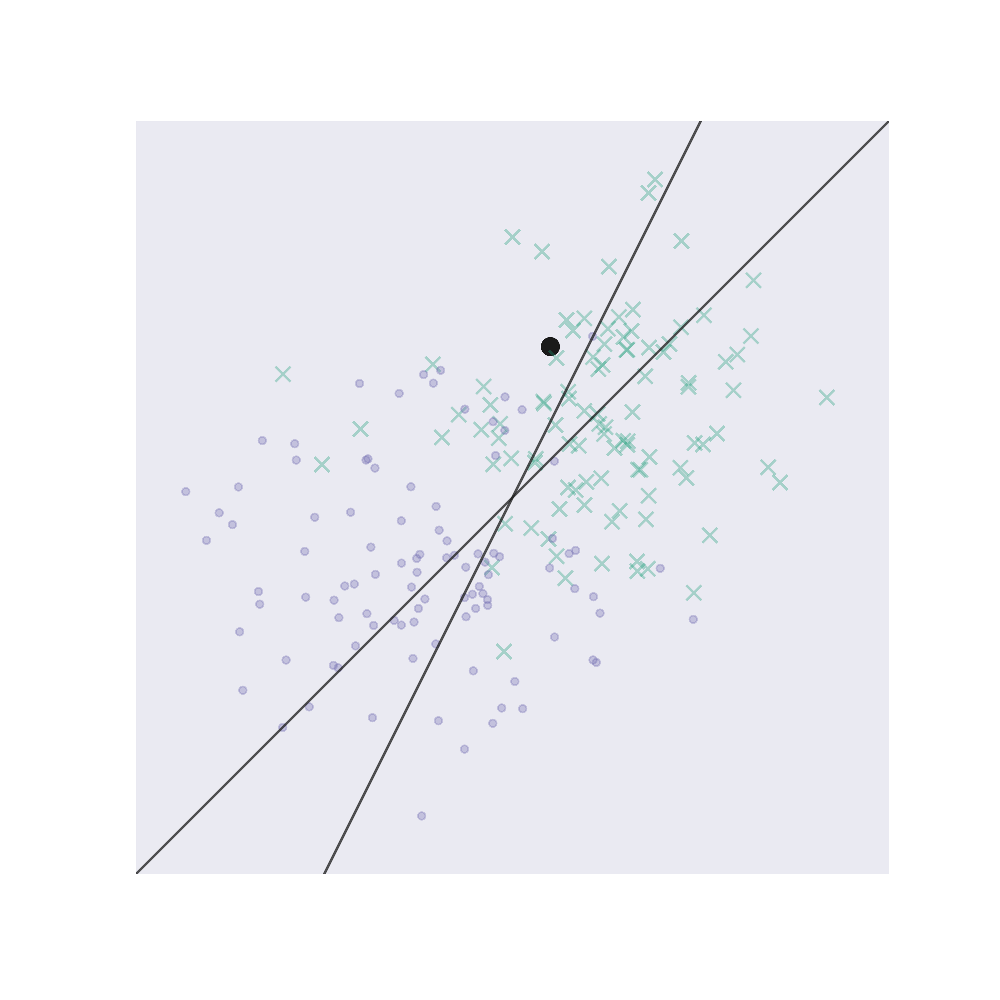 --- ### Source and Target Transformer The test point is projected onto both, and a predicted class is decided for both representations based on **target** data. The predictions are then averaged for the final prediction. 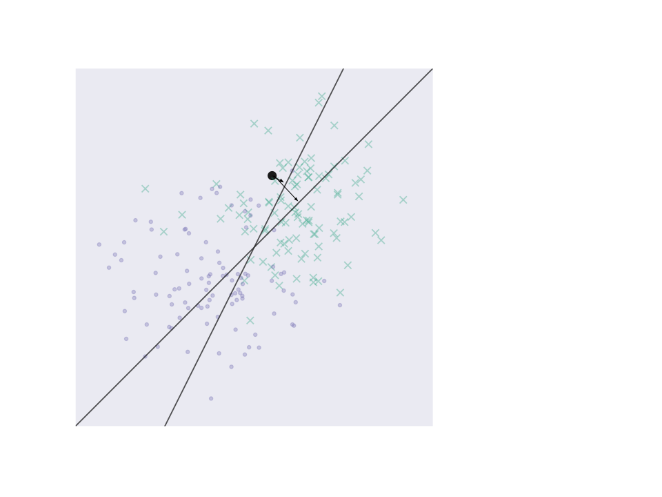 --- ### Constituents of Transfer Forests - Universal representation space: a partition of $ \mathbb{R}^{d} $ - Transformer: partition space using all the data from source task (and potentially updated using target data) - Decider: average of majority vote in each node from each tree applied to target data <!-- update above image as above: label arrows transformer and decider --> <!-- new slide: show error and posteriors but, x-axis in # of source data samples (for fixed target) y-axis is target error 2 lines: one using only target, and one also using increasing source give title to posterior plot http://colorbrewer2.org/#type=diverging&scheme=PuOr&n=11 --> --- ## Transfer Forests **Similar to before:** Use source and target data to learn **two** transfomers that send data to representations. Populated both partitions with data to learn deciders. Then, average predictions from each decider. <img src="images/l2m_18mo/cml_forest.jpg" style="width:700px" class="center"/> --- ### Example 4: .orange[XOR] to .purple[Not-XOR (N-XOR)] <img src="images/XOR-NXOR.png" style="width:475px" class="center"/> - .orange[XOR] - Samples in the (+, +) and (-, -) quadrants are class 0 - samples in the (-, +) and (+, -) quadrants are class 1. - .purple[N-XOR] - Samples in the (+, +) and (-, -) quadrants are class 1 - samples in the (-, +) and (+, -) quadrants are class 0. - The optimal decision boundaries for both problems are the coordinate axes. --- ### Transfer Forests <div style="display:inline-flex"> <div> <img src="images/l2m_18mo/L2M_18mo_xor_nxor_transfer.png" alt="Snow" style="height:300px; width:300px"> </div> <div> 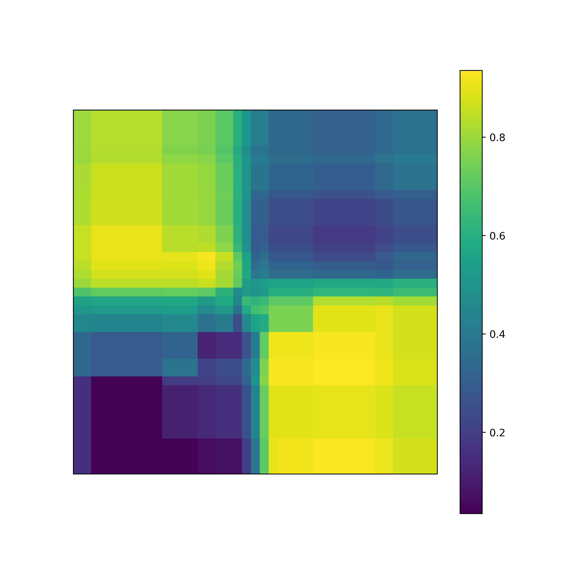 </div> </div> - (Left) Decision Forest .orange[XOR] uses: - 100 samples from .orange[XOR] to learn transformers (partition) - $n$ data from .purple[N-XOR] to learn decider (posterior) - (Right) learned probability of an observation being class 1 - used 100 .orange[XOR] and 300 .purple[N-XOR] training samples --- ### Transfer Forests <div style="display:inline-flex"> <div> <img src="images/l2m_18mo/L2M_18mo_xor_nxor_transfer.png" alt="Snow" style="height:300px; width:300px"> </div> <div> </div> </div> - Learning partitions is "harder" than posteriors: - DF .orange[XOR] only gets 100 samples to learn partitions, - DF .purple[N-XOR] gets up to 400 - Nonetheless, DF .orange[XOR] exhibits transfer learning, because its error decreases with increasing sample size --- ### Lifelong Learning: Basic Set-up Given 1. a universe of potential tasks, $\mathcal{J}$ 1. a sequence of data and task pairs $(z_1, j_1), (z_2,j_2),\ldots$, where each $j_t \in \mathcal{J}$ <!-- 2. data and t$ z'\_1, z'\_2, .., z'\_s $ --> <!-- 3. observed target data $ z\_1, z\_2, .., z\_n $ --> Assume 1. the $ z\_t $ are all independent 1. total \# samples > \# unique tasks --- ### Constituents of Lifelong LM (L2M) 1. .r[universal representation space]: data from all tasks are transformed into this space 2. .r[transformers]: map each data point from all tasks to the representation space 3. .r[deciders]: takes an action using transformed data from all tasks --- ### Example 5 $J$ increasing linear 2-class classification tasks 1. Representation: the real number line 2. Transformers: $J$ different projection matrix that maps data onto real number line 3. Deciders: $J$ thresholds such that values above threshold are one class, and below are the other <!-- means are +/- j (potentially with jitter added) --> --- ### Many Representations of a Lifelong Learner Each of the $J$ tasks can result in a (possibly different) learned representation. 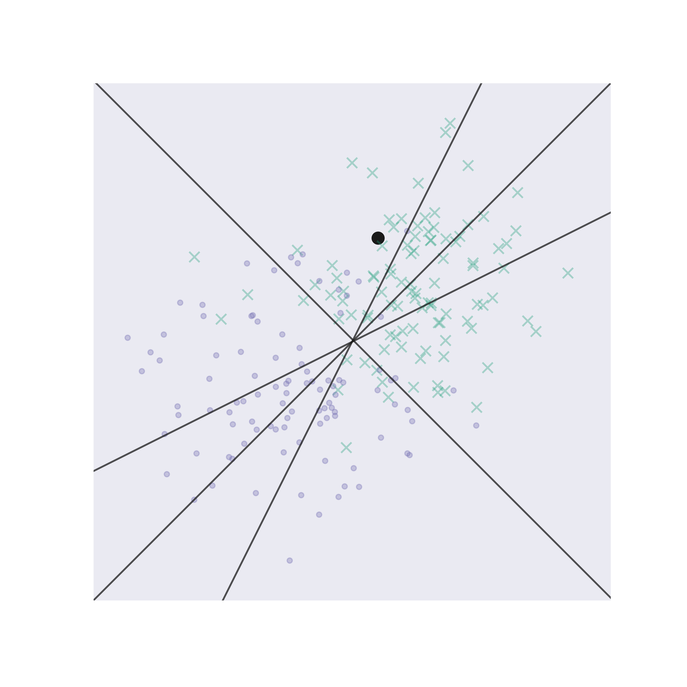 --- ### Many Transformers of a Lifelong Learner The test point can be transformed into instances in each representation. 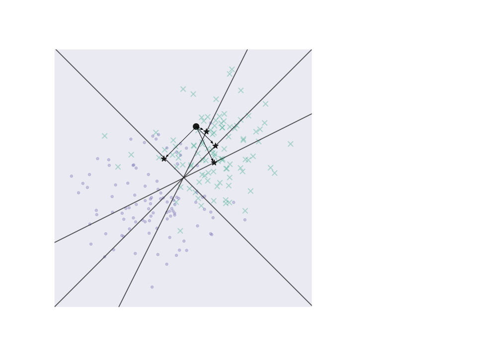 --- The data point can be classified in each representation. The black star represents a point with 0.5 predicted probability. However, all of these predictions are averaged for the final prediction. Thus, catastrophic forgetting is avoided in this example by retaining at least one "useful" representation. 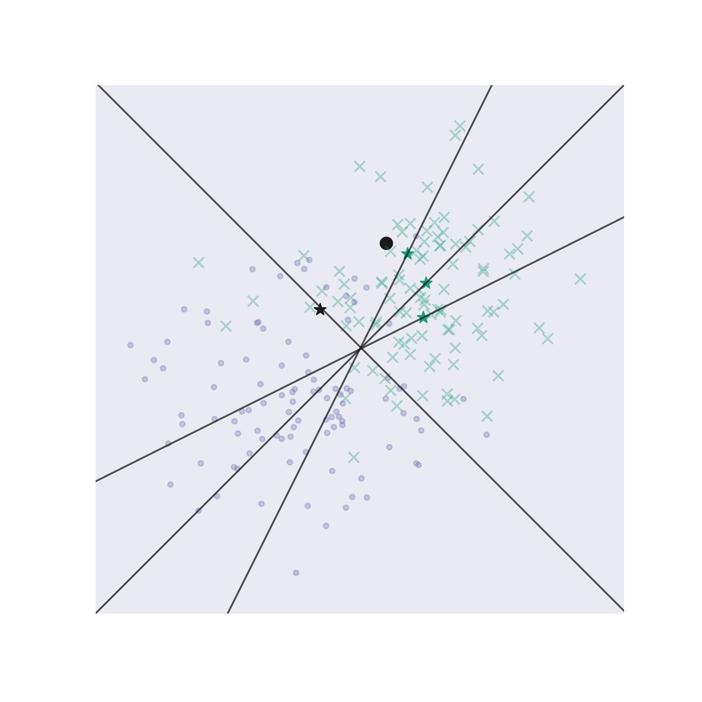 --- ### Lifelong Forests The same as transfer forests, but **each task** yields a representation. The data is transformed into each representation, and the deciders make predictions in each representation. The prediction is then averaged across representations. - Transformers: a forest to partition space for each task - Deciders: average of majority vote in each node from each tree applied to each task's data <!-- update a la other ones --> --- ### Example 6: .orange[XOR] and .purple[Not-XOR (N-XOR)] <img src="images/XOR-NXOR.png" style="width:475px" class="center"/> - .orange[XOR] - Samples in the (+, +) and (-, -) quadrants are class 0 - samples in the (-, +) and (+, -) quadrants are class 1. - .purple[N-XOR] - Samples in the (+, +) and (-, -) quadrants are class 1 - samples in the (-, +) and (+, -) quadrants are class 0. - The optimal decision boundaries for both problems are the coordinate axes. <!-- update colors --> --- ### Lifelong Forests <div style="display:flex"> <div> <img src="images/L2M_18mo_nxor_xor_lifelong.png" alt="Snow" style="height:300px; width:300px"> </div> <div> 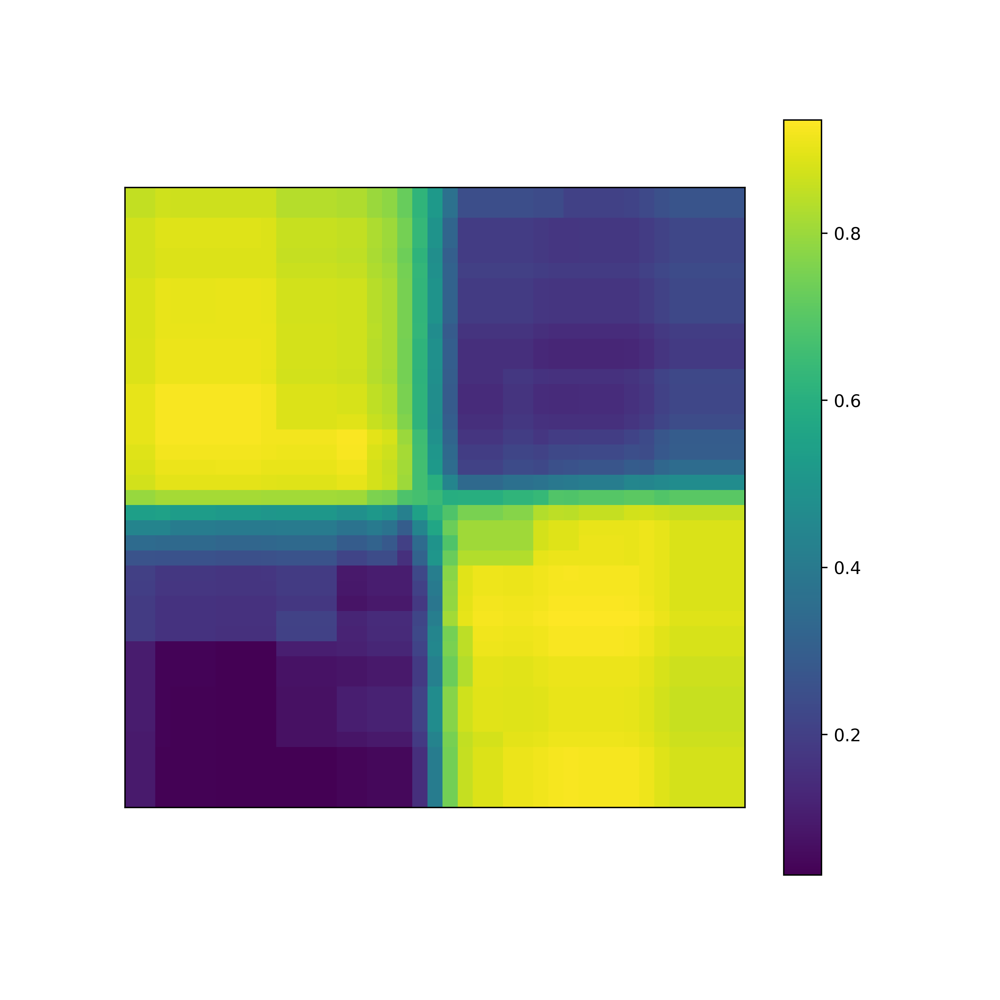 </div> </div> - Lifelong Forests learn the optimal decision boundary using both 1. 100 samples from .orange[XOR], and 2. $n$ samples from .purple[N-XOR]. - Posteriors are learned using only 300 samples from .purple[N-XOR] on both partitions. - Prediction is based on the learned posterior averaged over both partitions. <!-- make same as transfer learning plots but add new line update text accordingly --> --- ### Lifelong Forests <div style="display:flex"> <div> <img src="images/L2M_18mo_nxor_xor_lifelong.png" alt="Snow" style="height:300px; width:300px"> </div> <div> </div> </div> - Lifelong forests perform as well as the best method regardless of the amount of .purple[N-XOR] data - Lifelong forests therefore exhibits .r[adaptation to new tasks and circumstances] more effectively than a naïve transfer forest <!-- may want to show plots for other transfer direction --> --- ### Adversarial Tasks - .orange[XOR] vs .purple[N-XOR] is the easiest possible sequence of tasks - Consider an adversarial task: - a second task, .blue[Rotated-XOR (R-XOR)], which has zero information about the first task; - therefore, its data can only add noise and increase error 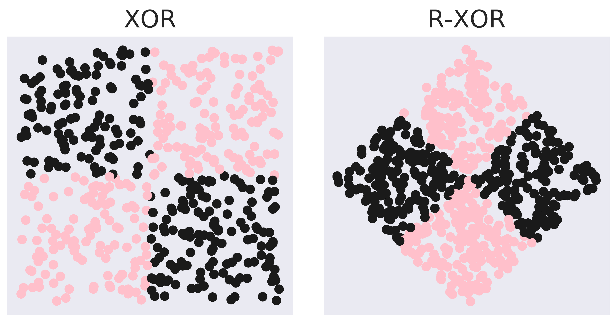 <!-- add two linear two-class classification problem w adverserial source task --> <!-- adverserial source task = either means reflected across x-axis or two gaussians centered at 0,0 --> --- ### Example 7: .r[XOR] and .blue[R-XOR] <!-- integrate this content into slide with figure --> - Left figures: - y-axis is error on .r[XOR] learned using 100 samples - x-axis is # of .blue[R-XOR] data samples - we used 100 .r[XOR] data samples - Right figures: - estimated probability of an observation from class 1 - learned using 100 .r[XOR] and 300 .blue[R-XOR] training samples --- ### Decision Forests <div style="display:flex"> <div> 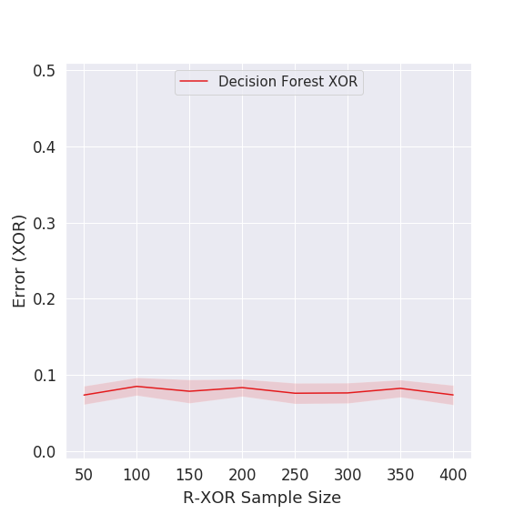 </div> <div> 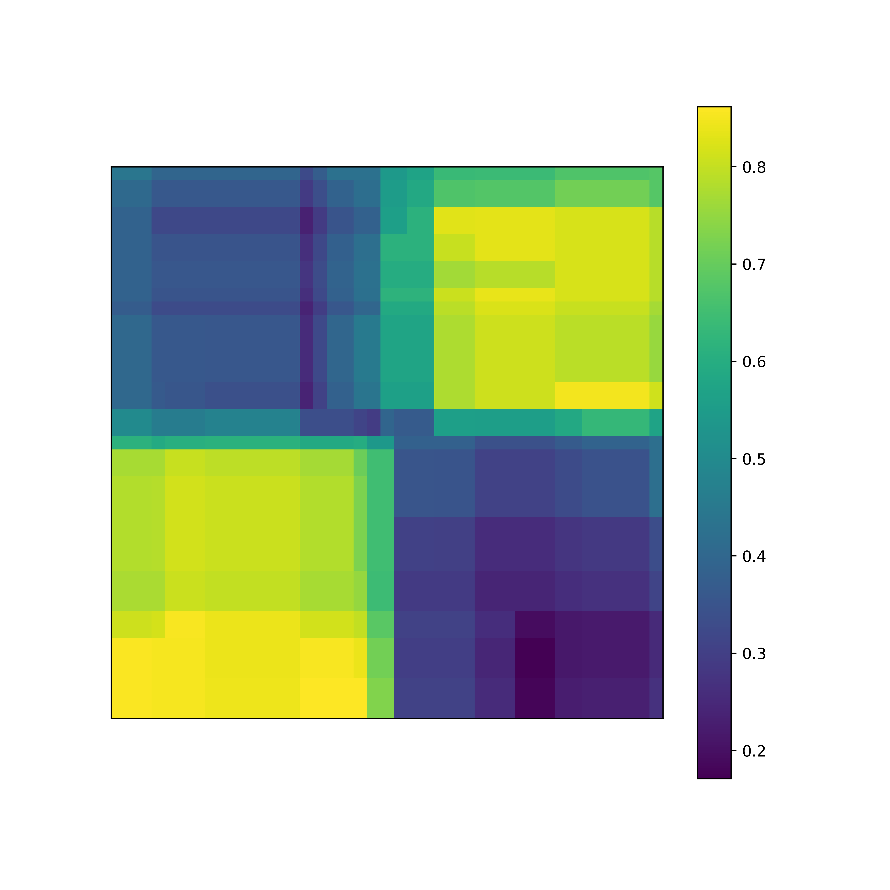 </div> </div> - Decision Forest .r[XOR] uses - data from .r[XOR] to learn transformer (partition) - other data from .r[XOR] to learn decider (posterior) - Since the number of samples from .r[XOR] is fixed, the error of DF .r[XOR] is constant <!-- fix posterior plots as above, with titles --> --- ### Transfer Forests <div style="display:flex"> <div> <img src="images/L2M_18mo_xor_rxor_transfer.png" alt="Snow" style="height:300px; width:300px"> </div> <div> 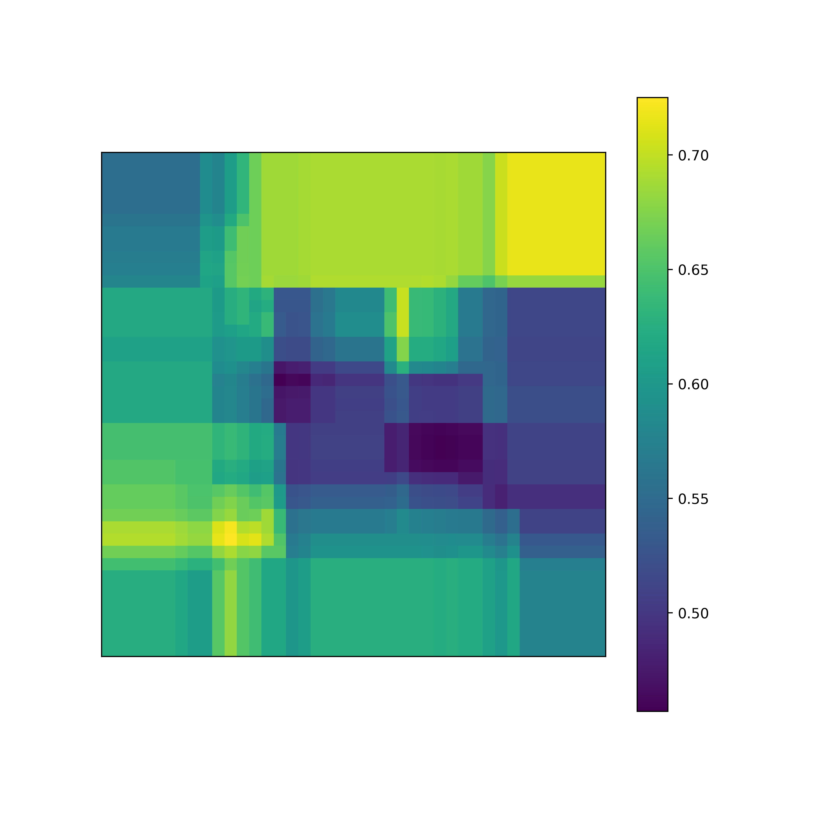 </div> </div> - Decision Forest .blue[R-XOR] uses - data from .blue[R-XOR] to learn transformers(partition) - data from .r[XOR] to learn decider (posterior) - Error only decreases slightly because the partitions are nearly uninformative (the informativeness is actually due to noisy estimate of the partition, the optimal partition is fully uninformative) <!-- fix posterior plots as above --> --- ### Lifelong Forests <div style="display:flex"> <div> 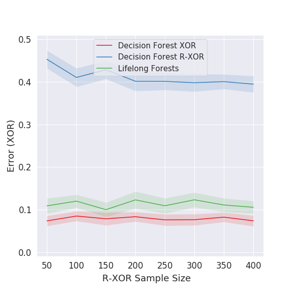 </div> <div> 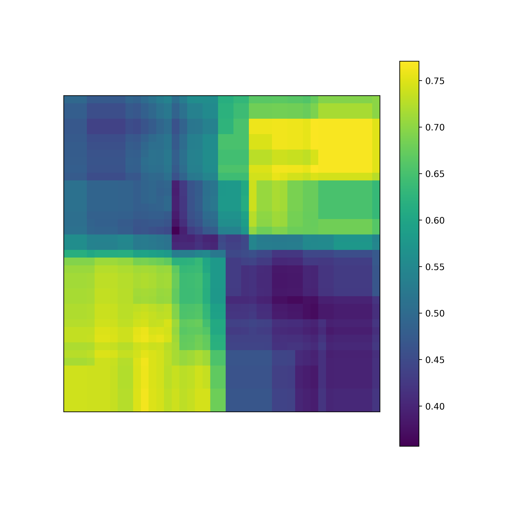 </div> </div> - Lifelong Forests learn the optimal decision boundary using data from both (1) .r[XOR], and (2) .blue[R-XOR]. - Posteriors are learned using only data from .r[XOR] on both partitions. - Prediction is based on the estimated posterior averaged over both partitions. <!-- fix posterior plots as above --> --- ### Lifelong Forests <div style="display:flex"> <div> </div> <div> </div> </div> - Lifelong forests do not dramatically degrade performance of past tasks, despite maximally adversarial tasks - Therefore, lifelong forests avoid .r[catastrophic forgetting] regardless of new task distributions, making it fundamentally .r[safe]. <!-- fix poster plots as above --> --- class: center, middle, inverse ## .center[L2F Lifelong Learns Empirically on Real Data] --- ## "Real" Data: CIFAR 10-by-10 - CIFAR 100 is a popular image classification dataset with 100 classes of images, containing 600 images, each 32x32 colour images. - There are 500 training images and 100 testing images per class. - CIFAR 10x10 break the 100 class task problem into 10 problems, each a 10 class problem. <!-- show images of each task/class eg, https://www.cs.toronto.edu/~kriz/cifar.html for 1 task, make a table left column is superclass and next 5 columns are tasks include this info: This dataset is just like the CIFAR-10, except it has 100 classes containing 600 images each. There are 500 training images and 100 testing images per class. The 100 classes in the CIFAR-100 are grouped into 20 superclasses. Each image comes with a "fine" label (the class to which it belongs) and a "coarse" label (the superclass to which it belongs). Here is the list of classes in the CIFAR-100: --> --- ### Previous State-of-the-Art #1 - David Lopez-Paz, Marc'Aurelio Ranzato. "[Gradient Episodic Memory for Continual Learning](https://papers.nips.cc/paper/7225-gradient-episodic-memory-for-continual-learning.pdf)." NIPS 2017. - 127 Citations <img src="images/evoplot_cifar100.png" style="width:750px;"/> Figure 1: evolution of the test accuracy at the first task, as more tasks are learned. --- ### Previous State-of-the-Art #2 - Seungwon Lee, James Stokes, and Eric Eaton. "[Learning Shared Knowledge for Deep Lifelong Learning Using Deconvolutional Networks](https://www.ijcai.org/proceedings/2019/393)." IJCAI, 2019. <img src="images/progressive_nets.png" style="width:500px;"/> Figure 1: No approaches demonstrate reverse transfer, and most demonstrate catastrophic forgetting. --- <img src="images/initial-cifar-100-debugged-1-subsample-precision.png" style="width:750px;"/> - Lifelong Forests exhibit both "reverse" or "backward" transfer: its performance on previously observed tasks increases as more tasks are observed. <!-- keep these 2 plots in appendix add error normalized each line by dividing by single task performance with errorbars --> --- <img src="images/initial-cifar-100-debugged-1-subsample-recall.png" style="width:750px;"/> --- class: middle, inverse ## .center[L2F Lifelong Learns Consistently] --- ### What is Consistency? $\mathcal{E}\_{S}(f\_n,P) \rightarrow \arg \min\_f \; \mathcal{E}\_{S}(f,P)$ as $n \to \infty$. ### What is Universal Consistency? $\forall P \in \mathcal{P}: \mathcal{E}\_{S}(f\_n,P) \rightarrow \arg \min\_f \; \mathcal{E}\_{S}(f,P)$ as $n \to \infty$. --- ### L2F Theorems Lemma 1: Uncertainty Forests produce universally consistent estimates of posterior probabilities for k-class classification problems. Lemma 2: Posteriors estimated on sufficiently deep and random trees are also universally consistent for k-class classification problems. Conj 3: For a specific $\vec{S}$, where $\mathcal{Z}\_j = (\mathcal{X} \times \mathcal{Y}\_j)$, L2F is a universal lifelong learner. Proof: Stone's Theorem, 1977 + Biau et al. 2008 + a little more. --- class: middle, inverse ## .center[Future Plans] --- ## Test and Evaluation Process 1. Test dataset 1: psychopathy data - ~1000 subjects - Cognitive, brain imaging, and other measurements acquired over 10 year span - Location, personnel, hardware, software, etc. changed over time. - Goal: predict recidivism (important social and moral considerations) 2. Test dataset 2: lifespan human connectome project data - ~1000 subjects - Cognitive, brain imaging, and other measurements acquired from people ranging from 5 to 81 years old - Goal: predict cognitive decline (important public health considerations) - Metrics: LLE as a function of sample size - Status: We have data, it is being processed. --- ### Concrete Examples and Limitations - Any supervised lifelong learning classification problem with the same feature space code will run on today. - Any supervised lifelong learning .r[regression] problem code will run soon. - If all feature spaces are "typical" .r[manifolds] (images, time-series), improved code will run soon. - We will soon have an implementation that does not require the data or model to fit in main memory. - If different tasks have different feature spaces (eg, some only have images, others only have text), code will run in near future. - We do not plan to have reinforcement learning in near future. --- ## 5 Core Capabilities 1. Continual Learning: ✓ (can stream updating probabilities) 2. Adaptation to New Tasks: ✓ (no catastrophic forgetting) 3. Goal Driven Perception: ✓ (all conditional on $S$) 4. Selective Plasticity: ✓ (uses consistent posterior estimates) 5. Monitoring & Safety ✗ -- Will incorporate streaming output of probabilities and changes in held-out error rate as new tasks are included. --- ## Other Next Steps - Extend empirical and theoretical results to more general settings - Extend empirical and theoretical results to deep learning --- ### Polytope space partitioning algorithms <img src="images/deep-polytopes.png" style="width:750px;"/> - NNs with ReLu nodes also partitions feature space into polytopes ([NIPS, 2014](http://papers.nips.cc/paper/5422-on-the-number-of-linear-regions-of-deep-neural-networks.pdf)). --- ### Convolutional RF is competitive with NN on images & time-series <img src="images/s-rerf_6panel.png" style="width:750px;"/> --- ### RF is more computationally efficient <img src="images/s-rerf_6plot_times.png" style="width:750px;"/> --- ### Summary Comparison - Any space partitioning algorithm can likely yield lifelong learning with guarantees - Decision forests (DF) with convolution match/exceed neural networks on basic image classification tasks - DF is already much faster to train and test - DF is fundamentally massively parallel, unlike neural networks --- ### References 3. T. M. Tomita et al. [Sparse Projection Oblique Randomer Forests](https://arxiv.org/abs/1506.03410). arXiv, 2018. 1. R Guo, et al. [Estimating Information-Theoretic Quantities with Uncertainty Forests](https://arxiv.org/abs/1907.00325). arXiv, 2019. 1. R. Perry, et al. Manifold Forests: Closing the Gap on Neural Networks. preprint, 2019. 1. C. Shen and J. T. Vogelstein. [Decision Forests Induce Characteristic Kernels](https://arxiv.org/abs/1812.00029). arXiv, 2018 7. J. Browne et al. [Forest Packing: Fast, Parallel Decision Forests](https://arxiv.org/abs/1806.07300). SIAM ICDM, 2018. 1. M. Madhya, et al. [Geodesic Learning via Unsupervised Decision Forests](https://arxiv.org/abs/1907.02844). arXiv, 2019. 1. H. Helm, et al. A Theory and Practice for Lifelong Learning. preprint, 2019. Code: [https://neurodata.io/sporf/](https://neurodata.io/sporf/) --- ### Other L2M Work Not Mentioned 1. J. Agterberg et al. Vertex Nomination, Consistent Estimation, and Adversarial Modification. arXiv, 2019. 2. J. Yoder et al. Vertex nomination: The canonical sampling and the extended spectral nomination schemes. arXiv, 2018. 3. V. Lyzinski et al. On consistent vertex nomination schemes. arXiv, 2017. 4. H. Patsolic et al. Vertex Nomination Via Seeded Graph Matching. arXiv, 2017. --- ### Acknowledgements <!-- <div class="small-container"> <img src="faces/ebridge.jpg"/> <div class="centered">Eric Bridgeford</div> </div> <div class="small-container"> <img src="faces/pedigo.jpg"/> <div class="centered">Ben Pedigo</div> </div> <div class="small-container"> <img src="faces/jaewon.jpg"/> <div class="centered">Jaewon Chung</div> </div> --> <div class="small-container"> <img src="faces/yummy.jpg"/> <div class="centered">yummy</div> </div> <div class="small-container"> <img src="faces/lion.jpg"/> <div class="centered">lion</div> </div> <div class="small-container"> <img src="faces/violet.jpg"/> <div class="centered">baby girl</div> </div> <div class="small-container"> <img src="faces/family.jpg"/> <div class="centered">family</div> </div> <div class="small-container"> <img src="faces/earth.jpg"/> <div class="centered">earth</div> </div> <div class="small-container"> <img src="faces/milkyway.jpg"/> <div class="centered">milkyway</div> </div> <br> -- <!-- <div class="small-container"> <img src="faces/cep.png"/> <div class="centered">Carey Priebe</div> </div> --> <div class="small-container"> <img src="faces/randal.jpg"/> <div class="centered">Randal Burns</div> </div> <div class="small-container"> <img src="faces/cshen.jpg"/> <div class="centered">Cencheng Shen</div> </div> <div class="small-container"> <img src="faces/bruce_rosen.jpg"/> <div class="centered">Bruce Rosen</div> </div> <div class="small-container"> <img src="faces/kent.jpg"/> <div class="centered">Kent Kiehl</div> </div> <!-- <div class="small-container"> <img src="faces/mim.jpg"/> <div class="centered">Michael Miller</div> </div> <div class="small-container"> <img src="faces/dtward.jpg"/> <div class="centered">Daniel Tward</div> </div> --> <!-- <div class="small-container"> <img src="faces/vikram.jpg"/> <div class="centered">Vikram Chandrashekhar</div> </div> <div class="small-container"> <img src="faces/drishti.jpg"/> <div class="centered">Drishti Mannan</div> </div> --> <div class="small-container"> <img src="faces/jesse.jpg"/> <div class="centered">Jesse Patsolic</div> </div> <div class="small-container"> <img src="faces/falk_ben.jpg"/> <div class="centered">Benjamin Falk</div> </div> <!-- <div class="small-container"> <img src="faces/kwame.jpg"/> <div class="centered">Kwame Kutten</div> </div> --> <!-- <div class="small-container"> <img src="faces/perlman.jpg"/> <div class="centered">Eric Perlman</div> </div> --> <div class="small-container"> <img src="faces/loftus.jpg"/> <div class="centered">Alex Loftus</div> </div> <!-- <div class="small-container"> <img src="faces/bcaffo.jpg"/> <div class="centered">Brian Caffo</div> </div> --> <!-- <div class="small-container"> <img src="faces/minh.jpg"/> <div class="centered">Minh Tang</div> </div> --> <!-- <div class="small-container"> <img src="faces/avanti.jpg"/> <div class="centered">Avanti Athreya</div> </div> --> <!-- <div class="small-container"> <img src="faces/vince.jpg"/> <div class="centered">Vince Lyzinski</div> </div> --> <!-- <div class="small-container"> <img src="faces/dpmcsuss.jpg"/> <div class="centered">Daniel Sussman</div> </div> --> <!-- <div class="small-container"> <img src="faces/youngser.jpg"/> <div class="centered">Youngser Park</div> </div> --> <!-- <div class="small-container"> <img src="faces/shangsi.jpg"/> <div class="centered">Shangsi Wang</div> </div> --> <div class="small-container"> <img src="faces/tyler.jpg"/> <div class="centered">Tyler Tomita</div> </div> <div class="small-container"> <img src="faces/james.jpg"/> <div class="centered">James Brown</div> </div> <!-- <div class="small-container"> <img src="faces/disa.jpg"/> <div class="centered">Disa Mhembere</div> </div> --> <!-- <div class="small-container"> <img src="faces/gkiar.jpg"/> <div class="centered">Greg Kiar</div> </div> --> <div class="small-container"> <img src="faces/jeremias.png"/> <div class="centered">Jeremias Sulam</div> </div> <!-- <div class="small-container"> <img src="faces/meghana.png"/> <div class="centered">Meghana Madhya</div> </div> --> <!-- <div class="small-container"> <img src="faces/percy.png"/> <div class="centered">Percy Li</div> </div> --> <!-- <div class="small-container"> <img src="faces/hayden.png"/> <div class="centered">Hayden Helm</div> </div> --> <!-- <div class="small-container"> <img src="faces/satish.png"/> <div class="centered">Satish Palaniappan</div> </div> --> <div class="small-container"> <img src="faces/nate.png"/> <div class="centered">Nate Anderson</div> </div> <div class="small-container"> <img src="faces/fan.png"/> <div class="centered">Qiuyun Fan</div> </div> </div> <!-- <img src="images/funding/nsf_fpo.png" STYLE="HEIGHT:95px;"/> --> <!-- <img src="images/funding/nih_fpo.png" STYLE="HEIGHT:95px;"/> --> <img src="images/funding/darpa_fpo.png" STYLE=" HEIGHT:95px;"/> <!-- <img src="images/funding/iarpa_fpo.jpg" STYLE="HEIGHT:95px;"/> --> <!-- <img src="images/funding/KAVLI.jpg" STYLE="HEIGHT:95px;"/> --> <!-- <img src="images/funding/schmidt.jpg" STYLE="HEIGHT:95px;"/> --> --- class:center <img src="images/liono_holds_babyv.jpeg" style="position:absolute; top:0px; left:200px; height:100%;"/> --- class: middle, inverse ## .center[Extra Slides] --- ### Lifelong learning algorithms - Fundamentally, a lifelong learning algorithm must summarize previous tasks via a useful representation to effectively use these tasks for learning a new task. - In supervised classification, the most useful representation of a task is its corresponding optimal decision boundary. - More generally, tessellating space into cells yields a representation/compression valuable for any subsequence inference task. --- ### What are Decision Forests? - Two things: 1. a partitioning of the space into mutually exclusive cells 2. an assignment of probabilities within each cell - This is true for decision trees, random forests, gradient boosting trees, etc. - Axis-aligned trees yield cells that are each right rectangular prisms (also called rectangular cuboids, rectangular parallelepiped, and orthogonal parallelipiped) - Axis-oblique trees yield cells that are more general polytopes Note: Deep Nets with ReLu activation function also tesselate space into polytopes <!-- --- ### What are Honest Trees? 1. Subset the data into 2 subsets 2. Learn the partitions using 1 set 3. Learn the probabilities using the other set. Doing so yields consistent estimates of the probabilities, that is, $$\hat{P}(f\_n) \rightarrow P$$ --> --- ### Key Algorithmic Insight - Cells of a partition of space can be a universal representation - Partitions can be learned on a **per task** basis - Probabilities can be estimated given **any** partition, including those from other tasks - Use all data to estimate probabilities on the partitions learned separately for each task - Average probabilities learned on each partition to obtain final answer --- ### Algorithm (High-Level) - Input: $n$ points associated with $J$ different supervised classification/regression tasks - Output: A classifier/regressor function for each task - Algorithm: - for $j \in [J]$ - Learn partition of space using only data from task $j$ - Learn probabilities using partitions $1, \ldots, j$ - Output average over all $j$ probability estimates -- Notes: - This exact procedure can be applied as $J$ continues to increase - This procedure could be use any pair of algorithms for learning partitions and probabilities. - We focus on random forests for simplicity. - We assumed related measurement spaces, specifically, $\mathcal{Z}\_j= \lbrace \mathcal{X} \times \mathcal{Y}\_j \rbrace$ --- ### Basic L2M (unbounded storage) <!-- Given the above assumptions, all lifelong learning algorithms can be characterized as follows. --> For each $(z_t, j_t)$, 1. update .r[transformer] using all available data: $h\_t (\lbrace z\_t,j\_t \rbrace) \rightarrow \hat{f}\_t$ 2. for each sample, apply .r[transformer]: $\hat{f}\_t (z\_i) = \tilde{z}\_i$ 3. for each .r[decider], update using all available data: $g\_t (\lbrace \tilde{z}\_t,j\_t \rbrace) \rightarrow \lbrace \hat{\eta}\_j \rbrace $ 4. apply .r[decider]: $\hat{\eta}\_{j\_t}(\tilde{z}\_t) \rightarrow a\_t$ --- ### Basic L2M (bounded storage) For each $(z_t, j_t)$, 1. update .r[transformer]: $h\_t ( z\_t,j\_t, \hat{f}\_{t-1} ) \rightarrow \hat{f}\_t$ 2. apply .r[transformer]: $\hat{f}\_t (z\_t) = \tilde{z}\_t$ 3. update all .r[deciders]: $g\_t ( \tilde{z}\_t,j\_t, \hat{\eta}\_{t-1} ) \rightarrow \lbrace \hat{\eta}\_j \rbrace $ 4. apply .r[decider]: $\hat{\eta}\_{j\_t}(\tilde{z}\_t) \rightarrow a\_t$ --- ### Lifelong Forests - Assume data are batched into unique tasks - For each task, $ z_t | j_t = j$ 1. Learn a new forest using data only from task $j_t$ 2. Apply forest to each observation so far 3. For each task, update plurality/average vote per tree 4. Apply average vote for $z_t$